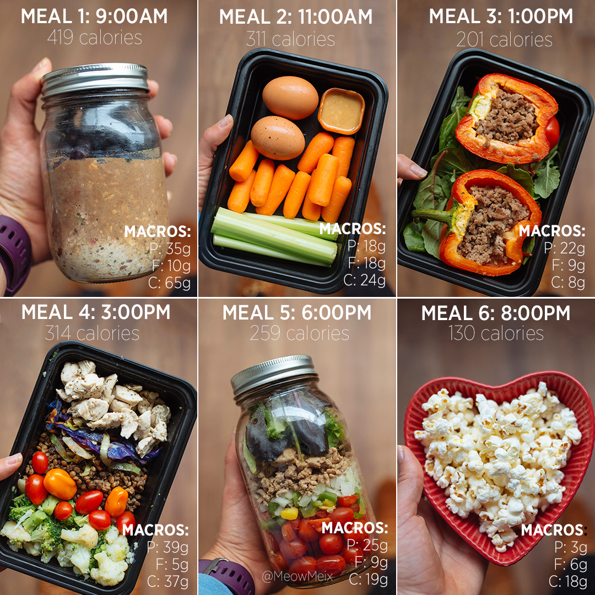
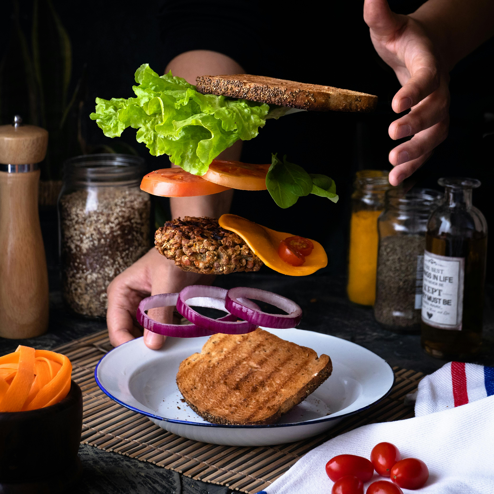
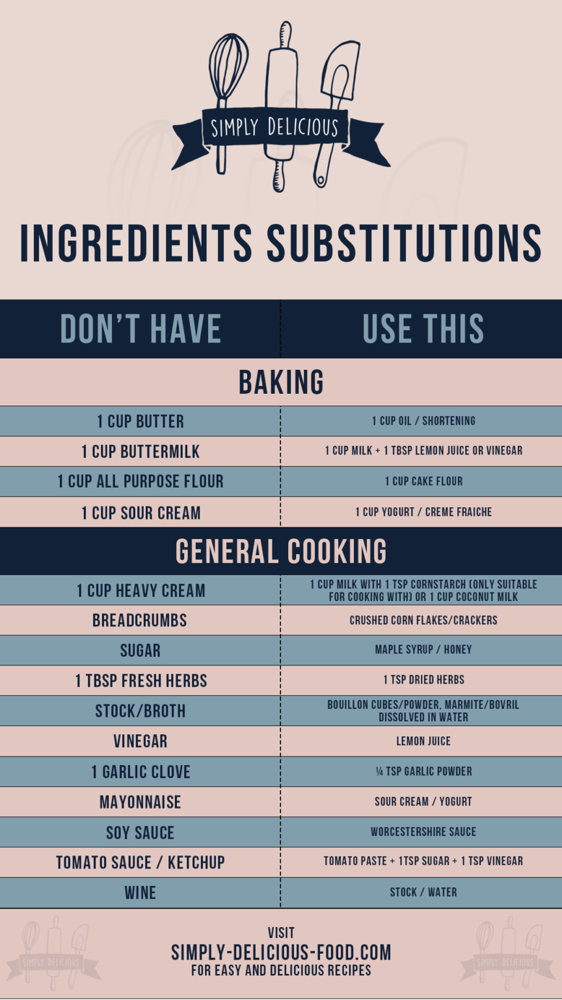

Special Features
Discover nutritious recipes that prioritize wholesome ingredients, offering options for those following specific diets such as vegetarian, vegan, gluten-free, or low-carb.

Interactive Meal PLanner
Plan your weekly meals effortlessly with our interactive meal planner tool. Simply drag and drop recipes into your calendar, customize serving sizes, and generate a shopping list with just one click. Stay organized and save time with this intuitive feature.

Cooking Videos
Enhance your cooking skills with step-by-step video tutorials led by our expert chefs. Watch as they walk you through each recipe, providing helpful tips, techniques, and demonstrations along the way.

Ingredients substitution
Never let a missing ingredient hold you back again. Our ingredient substitution feature suggests alternative options for common allergens or pantry staples, allowing you to adapt recipes to suit your preferences and dietary needs.